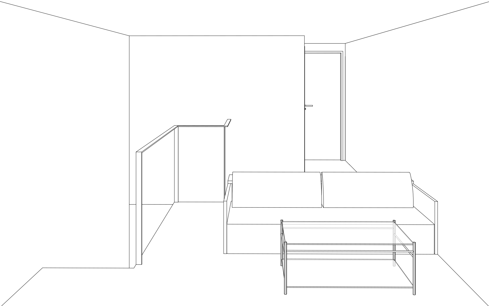
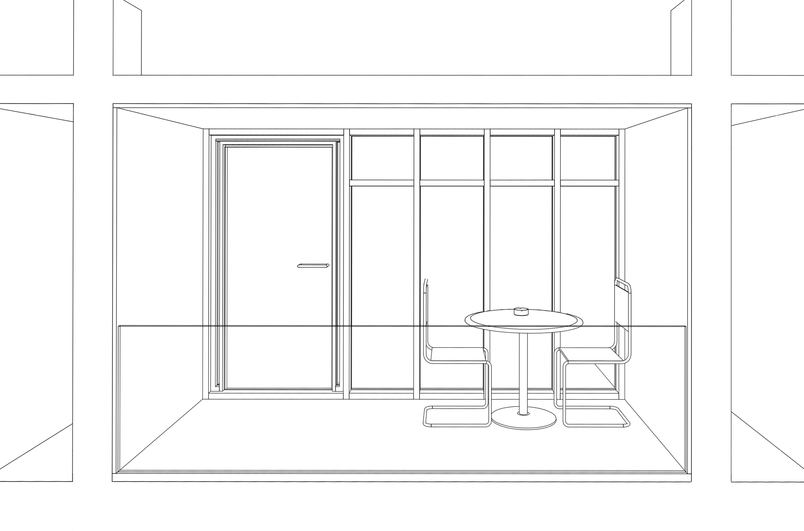
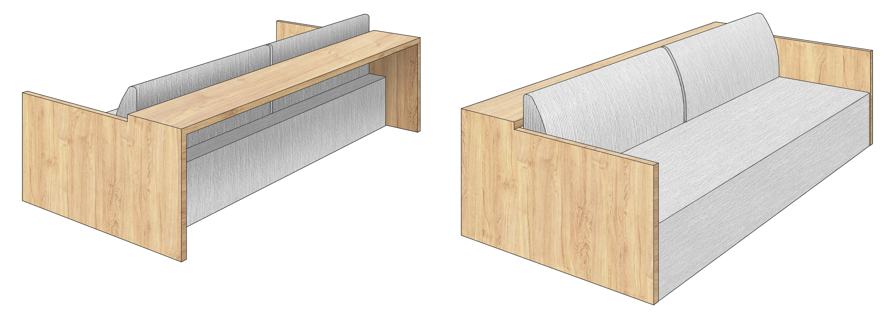

Living

Vista tridimensionale del salotto al piano superiore. L’arredamento è costituito da un confortevole, quanto essenziale, divano Kashan di e15 la cui peculiarità è costituita dall’asse di legno orizzontale che funge da sostegno per lo schienale e crea un ampio e comodo piano d’appoggio.
Un tavolino in vetro, posto di fronte al divano, completa il semplice allestimento. La seduta si affaccia sulla parete vetrata concedendo una vista ad ampio raggio sull’esterno. In basso, vista tridimensionale della loggia ideale per godere di tranquilli momenti di relax.

